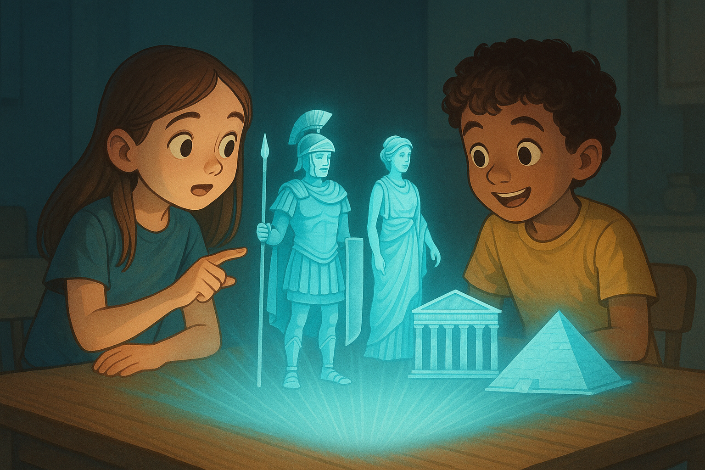

Produção Dinâmica de Média
A nossa solução de Produção Dinâmica de Média utiliza inteligência artificial generativa para criar conteúdos personalizados e adaptáveis em tempo real, revolucionando a forma como as empresas comunicam com o seu público.
Descrição Geral
A Produção Dinâmica de Média é uma solução inovadora que utiliza algoritmos avançados de IA para gerar e adaptar conteúdos multimédia em tempo real. A plataforma analisa dados do utilizador, contexto e preferências para criar experiências de comunicação altamente personalizadas.
Esta tecnologia permite que as empresas produzam conteúdos relevantes e envolventes sem a necessidade de grandes equipas de produção, reduzindo custos e aumentando a eficácia das suas estratégias de comunicação.

Funcionalidades Principais
A nossa solução de Produção Dinâmica de Média oferece um conjunto de funcionalidades avançadas para transformar a criação e o consumo de conteúdo.
Geração de Conteúdo Personalizado
Criação automática de textos, imagens e vídeos adaptados ao perfil de cada utilizador, aumentando o envolvimento e a relevância.
Adaptação Contextual
Ajuste dinâmico do conteúdo com base no contexto de visualização, dispositivo, localização e hora do dia.
Narrativas Interativas
Criação de histórias e apresentações que evoluem com base nas interações e feedback do utilizador em tempo real.
Análise de Desempenho
Ferramentas avançadas para medir o impacto e a eficácia do conteúdo gerado, permitindo otimizações contínuas.
Inovações Tecnológicas
A nossa plataforma de Produção Dinâmica de Média incorpora tecnologias de ponta que a distinguem no mercado e oferecem vantagens competitivas significativas aos nossos clientes.
Modelos Generativos Avançados
Utilizamos os mais recentes modelos de IA generativa para criar conteúdos de alta qualidade que são indistinguíveis dos produzidos por humanos.
Aprendizagem Contínua
Os nossos algoritmos melhoram constantemente com base nos dados de interação, adaptando-se às preferências em evolução do público.
Integração Multicanal
Distribuição perfeita do conteúdo gerado em diversos canais, desde redes sociais a websites e aplicações móveis.
Valor para o Negócio
A implementação da nossa solução de Produção Dinâmica de Média oferece benefícios tangíveis e mensuráveis para as organizações:
Redução de Custos
Diminuição significativa nos custos de produção de conteúdo através da automação e otimização de processos criativos.
Aumento do Envolvimento
Conteúdo personalizado e relevante que gera maior envolvimento do público e taxas de conversão mais elevadas.
Escalabilidade
Capacidade de produzir grandes volumes de conteúdo personalizado sem comprometer a qualidade ou aumentar proporcionalmente os recursos.
Agilidade de Mercado
Resposta rápida às tendências e mudanças no mercado, permitindo ajustes em tempo real nas estratégias de comunicação.
Galeria do Projecto
Visualize exemplos da nossa solução de Produção Dinâmica de Média em ação.
Projectos Relacionados
Conheça outros projectos inovadores da DIGISOL que podem lhe interessar.


Interessado na Produção Dinâmica de Média?
Entre em contacto connosco para saber mais sobre como podemos revolucionar a sua estratégia de conteúdo
Fale Connosco